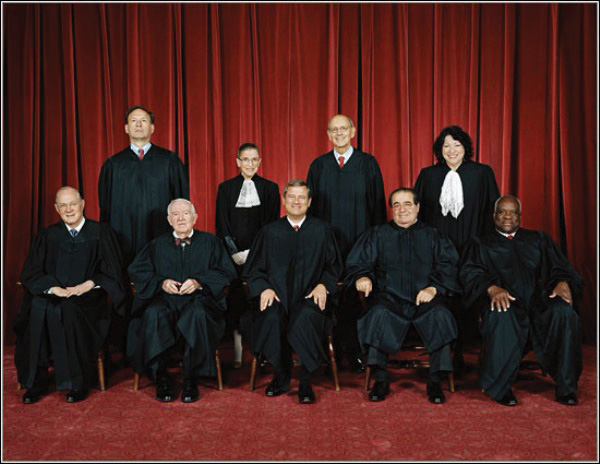
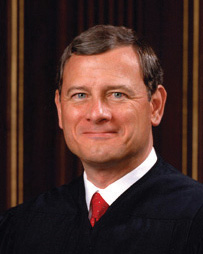
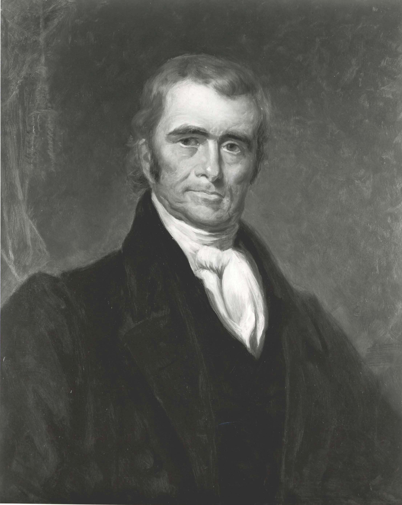
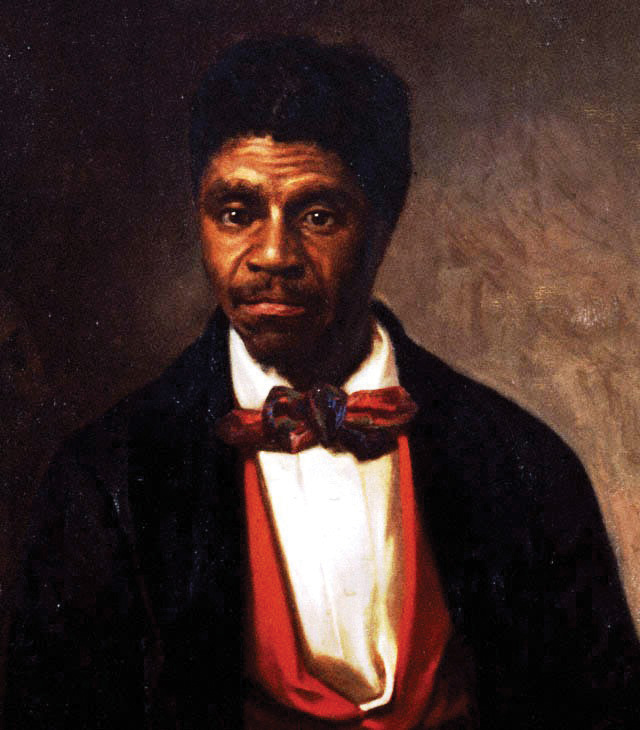
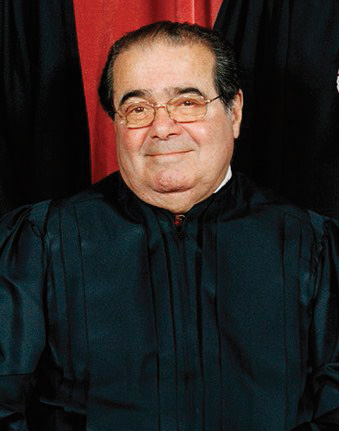
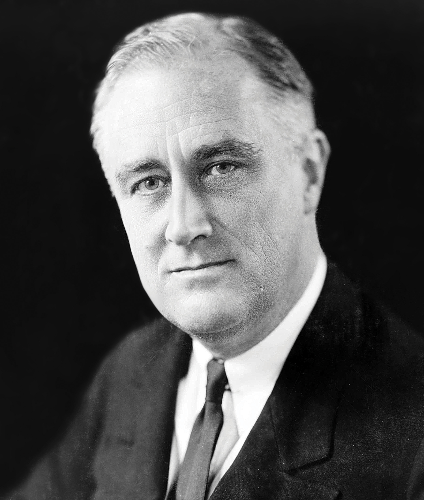
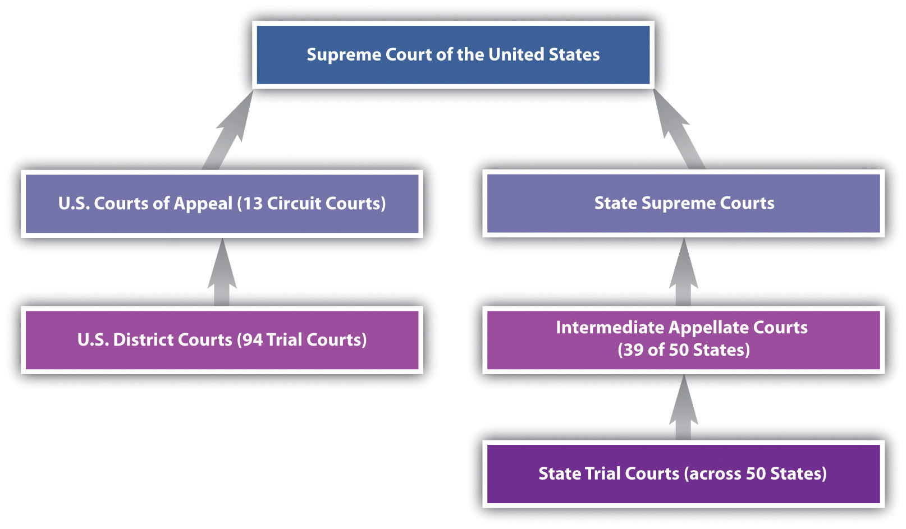
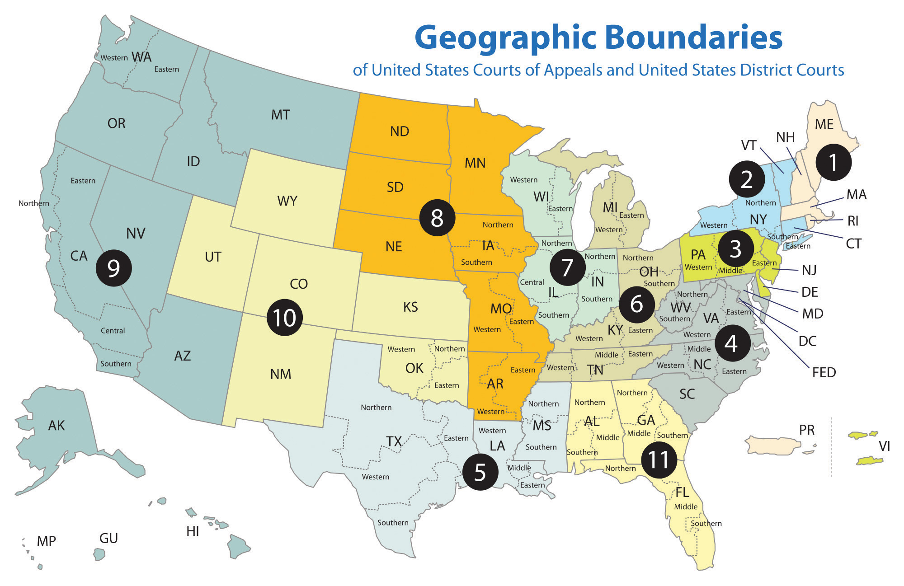

After reading this chapter, you should have a thorough understanding of the U.S. court system and how it affects the conduct of businesses and individuals. Specifically, you should be able to answer the following questions:
As you now know, laws are meaningless if they are not enforced. Companies have to make a barrage of decisions daily, from product development to marketing to strategies to maintain growth, but most of these are based on sound business acumen rather than legal requirements. If a company does violate a law, however, it must be held accountable. Typically, that accountability comes in the form of a lawsuit heard in court. Whether a suit is brought by a supplier, customer, employee, shareholder, or other stakeholder, litigation is a fact of life for companies. As future business professionals, being familiar with our court system will lay the foundation for your understanding of the litigation process.
Under the federal Constitution, power is separated among three branches of government. Article I of the Constitution allocates the legislativeCreated by Article I of the Constitution at the federal level, this branch is responsible for drafting laws. power to Congress, which is composed of the House of Representatives and the Senate. Congress makes laws and represents the will of the people in doing so. Article II of the Constitution creates the executiveCreated under Article II of the Constitution, this is another name for the office of the president and its related agencies. power in the president and makes the president responsible for enforcing the laws passed by Congress. Article III of the Constitution establishes a separate and independent judiciaryCreated by Article III of the Constitution and by various state constitutions and laws, this is the branch of government dedicated to the administration of justice., which is in charge of applying and interpreting the meaning of the law. The U.S. Supreme Court sits at the top of the federal judiciary as the supreme court of the land. There are nine judges on the Supreme Court. (See Figure 2.1 "The U.S. Supreme Court in 2009".)
Figure 2.1 The U.S. Supreme Court in 2009
Justice Stevens has since retired and was replaced by Justice Kagan in 2010.
Source: Photo courtesy of Steve Petteway, Collection of the Supreme Court of the United States, http://en.wikipedia.org/wiki/File:Supreme_Court_US_2009.jpg.
The Constitution is remarkably short in describing the judicial branch. The president, under Article II, has the power to nominate judges with the advice and consent of the Senate. Article III also provides the following: “The judicial power of the United States, shall be vested in one Supreme Court, and in such inferior courts as the Congress may from time to time ordain and establish. The judges, both of the supreme and inferior courts, shall hold their offices during good behaviour, and shall, at stated times, receive for their services, a compensation, which shall not be diminished during their continuance in office.” Under the Constitution, therefore, there are only two requirements to becoming a federal judge: nomination by the president and confirmation by the Senate. There are no age, citizenship, or qualification requirements. If the president wanted to, he could nominate any reader of this book as a federal judge. Additionally, the Constitution guarantees that judges are relatively free from political interference by providing them with lifetime tenure and a salary that cannot be reduced.
It is commonly accepted that the three branches of government are coequal, but in reality they are very different. The judiciary is the only unelected branch of government and is therefore the most mysterious. Although many Americans know who the president is, and many are familiar with their representatives in Congress, very few know the names of the judges who sit on the Supreme Court or any lower court. When politicians run for Congress or president, they spend months campaigning, begging voters to look into their eyes and trust them enough to cast their votes. Since judges are not elected, the vast majority of Americans cannot associate them with a face. Indeed, many visitors to the Supreme Court building in Washington, DC, routinely come face-to-face with a justice and don’t realize it.
The three branches also consume vastly different resources in serving the public, with the entire federal court system consuming less than two-tenths of 1 percent of the federal budget. The political branches capture the public imagination with monuments and landmarks (Air Force One, the White House, the Capitol), while the federal judiciary works in relative anonymity. (All federal judges, for example, travel commercially and do not have access to government-owned planes.) Finally, the judiciary is designed to be the most remote branch from the people. In addition to being unelected, federal judges have life tenure and can be removed from office only through impeachment. They also tend to be in public office far longer than politicians. While the United States has had forty-four presidents and more than two thousand members of Congress, Chief Justice John Roberts is only the seventeenth chief justice. Roberts was only fifty years old when he became chief justice and will likely be chief justice for many decades to come, certainly long after his nominating president, George W. Bush, has faded from public life.
When we speak of the “federal judiciary,” we are referring to a very small entity compared to other federal bureaucracies. The Supreme Court (the building, justices, and staff) is one part of the federal judiciary. The district and appellate courts (described later in this chapter) are another part, and they also comprise judges and staff (although these courts do not own their own buildings; rather, all courts other than the Supreme Court are rented from other branches of the government). The Administrative OfficeThe agency responsible for rent, payroll, budget, and other administrative matters relating to the functioning of the federal judiciary. of the United States Courts runs the day-to-day issues for all the courts, such as payroll and rent. A second component of the judiciary is the Federal Judicial CenterA federal agency dedicated to conducting research on judicial administration and providing judicial education., an agency dedicated to conducting research on judicial administration and providing judicial education. A third component is the United States Sentencing Commission (USSC)The commission created by Congress to explore ways to establish uniformity in federal criminal sentencing., established by Congress to make recommendations on how to establish uniformity in federal criminal sentencing. In addition to his responsibilities in hearing cases and writing opinions, the chief justiceIn the U.S. Supreme Court, the representative of the judicial branch to other branches and the administrative head of the judiciary. oversees the overall operation of the federal courts and represents the courts to the other branches of government. When it comes to hearing and deciding cases, however, the chief justice is “first among equals”: he has no more power than any of the other justices, known as associate justicesIn the U.S. Supreme Court, one of the eight regular members of the Court..
In that capacity, the chief justice traditionally releases an annual report on the judiciary. Since becoming chief justice in 2005, Chief Justice Roberts (Figure 2.2 "Chief Justice John G. Roberts") has focused his annual reports on judicial pay. Although judicial salaries cannot be reduced, years have passed since Congress approved a cost-of-living increase for judges. District court judges are currently paid $169,300 (the same salary as members of Congress), while circuit court judges are paid $179,500. Supreme Court justices earn $208,100, and the chief justice earns $217,400. While this may seem like a lot of money, it’s important to keep in mind that the integrity of the judicial system depends on attracting the very best lawyers to join the bench. Lawyers of that caliber are also in high demand in private law firms, where they can earn many times more than what judges earn. As a result, high-quality lawyers who otherwise may serve the country by becoming judges never even consider joining the bench. As you can see from Note 2.11 "Hyperlink: Excerpt from 2008 Year-End Report to Congress", there is a risk, the chief justice believes, that the pool of judicial talent may be limited to less-than-the-best lawyers or those who are independently wealthy.
Figure 2.2 Chief Justice John G. Roberts
Source: Photo courtesy of the Supreme Court of the United States, http://en.wikipedia.org/wiki/File:File-Official_roberts_CJ_cropped.jpg.
http://www.supremecourt.gov/publicinfo/year-end/2008year-endreport.pdf
I suspect many are tired of hearing it, and I know I am tired of saying it, but I must make this plea again—Congress must provide judicial compensation that keeps pace with inflation. Judges knew what the pay was when they answered the call of public service. But they did not know that Congress would steadily erode that pay in real terms by repeatedly failing over the years to provide even cost-of-living increases.
Last year, Congress fell just short of enacting legislation, reported out of both House and Senate Committees on the Judiciary, that would have restored cost-of-living salary adjustments that judges have been denied in past years. One year later, Congress has still failed to complete action on that crucial remedial legislation, despite strong bipartisan support and an aggregate cost that is miniscule in relation to the national budget and the importance of the Judiciary’s role. To make a bad situation worse, Congress failed, once again, to provide federal judges an annual cost-of-living increase this year, even though it provided one to every other federal employee, including every Member of Congress. Congress’s inaction this year vividly illustrates why judges’ salaries have declined in real terms over the past twenty years.
Our Judiciary remains strong, even in the face of Congress’s inaction, because of the willingness of those in public service to make sacrifices for the greater good. The Judiciary is resilient and can weather the occasional neglect that is often the fate of those who quietly do their work. But the Judiciary’s needs cannot be postponed indefinitely without damaging its fabric. Given the Judiciary’s small cost, and its absolutely critical role in protecting the Constitution and rights we enjoy, I must renew the Judiciary’s modest petition: Simply provide cost-of-living increases that have been unfairly denied! We have done our part—it is long past time for Congress to do its.
The Supreme Court is a well-known institution today, but it wasn’t always that way. When the Court first met, many of the justices (then appointed by George Washington) couldn’t travel in time for the Court’s opening day, so the session was dismissed. For the first three years of its existence, the Court heard no cases of any importance. John Jay, the first chief justice, traveled to Europe while he was chief justice to negotiate the Jay Treaty with Great Britain. While there, he won election as governor of New York. He was reappointed as chief justice by President Washington and confirmed by the Senate but declined to return to the Court, citing the Court’s lack of energy, weight, and dignity as part of his reasoning. It wasn’t until John Marshall became the fourth chief justice (a position he held for a record thirty-four years) that the Supreme Court firmly established itself as a separate and coequal branch of government. The Supreme Court did not even get its own building until 1932, years after the nation’s capital was established in Washington, DC. Before then, it met in the basement of the old Senate building to hear cases. When William Taft (the only president who also served as a Supreme Court justice) became chief justice, he persuaded Congress to appropriate funds, and the Court finally got its own building in Washington, DC (see Figure 2.3 "U.S. Supreme Court").
http://supremecourt.c-span.org/VirtualTour.aspx
The Supreme Court building, located at 1 First Street, is an impressive marble building that sits at the northern border of Washington, DC’s, famous plaza. It is open year-round and is free to visit. If you have not been there, you can use the link to take a virtual tour of the entire building, inside and out, courtesy of C-Span.
The Supreme Court’s early malaise can partially be attributed to the problem that no one really had a good idea of what the Supreme Court was supposed to do. There were few cases of tremendous national importance in the new republic, and a quirky tradition known as “riding circuit” meant that the Supreme Court justices also acted as lower appellate court judges, thus making their work at the Supreme Court somewhat duplicitous. The Constitution simply states that the judicial power of the United States is vested in the Supreme Court, without expounding what that means. It wasn’t until 1803 that the modern role of the Supreme Court began to emerge.
In 1800, the presidential election between John Adams and Thomas Jefferson nearly tore the country apart. The election was bitter, partisan, and divisive. Jefferson won but wasn’t declared the winner until early in 1801. In the meantime, Adams and other Federalists in Congress attempted to leave their mark on government by creating a slate of new life-tenured judgeships and appointing Federalists to those positions. For the judgeships to become effective, certain paperwork (known as commissions) had to be delivered in person to the new judges. At the time power transitioned from Adams to Jefferson, several commissions had not been delivered, and Jefferson ordered his acting secretary of state to stop delivering them. When Jefferson came to power, there was not a single judge from his Democratic-Republican Party sitting on the bench, and he wasn’t keen on expanding the Federalist influence on the bench any further. One Federalist judge, William Marbury, sued the secretary of state, James Madison, to deliver his commission. The case was filed in the Supreme Court, led by Chief Justice John Marshall (Figure 2.4 "Chief Justice John Marshall"). Marshall himself was a Federalist and had served as Adams’s secretary of state, so he understood how political the case was and how he stood to be accused of bias if he ruled the wrong way. In a shrewd and calculated move, he ultimately ruled against Marbury but at the same time declared that it was the Supreme Court’s role to decide the meaning of the Constitution. This is called judicial reviewThe power of courts to declare legislative or executive acts unlawful., and it makes the U.S. Supreme Court the most powerful judicial body in the world. The following is from Marbury v. Madison: “It is emphatically the province and duty of the Judicial Department to say what the law is. Those who apply the rule to particular cases must, of necessity, expound and interpret that rule. If two laws conflict with each other, the Courts must decide on the operation of each.”Marbury v. Madison, 5 U.S. 137 (1803).
Figure 2.4 Chief Justice John Marshall
Source: Photo courtesy of the U.S. Department of State, http://www.flickr.com/photos/statephotos/2267272626.
Chief Justice Marshall did not invent judicial review; it is a feature of most common-law countries and as a concept goes back centuries. He did, however, institutionalize judicial review at the U.S. Supreme Court at a time when there was great uncertainty about the Court’s future role in government. While all three branches are bound to uphold the Constitution, on all matters relating to the meaning of the Constitution, the Supreme Court has the final say.
After Marbury v. Madison, it took the Supreme Court nearly sixty years to again use the power of judicial review to strike down legislation. The case was Dred Scott v. Sanford,Dred Scott v. Sanford, 60 U.S. 393 (1857). and it involved a slave who traveled with his owner, a doctor in the army, to many states including free states (Figure 2.5 "Dred Scott"). Dred Scott filed suit for his freedom, and the case ended up before the Supreme Court. In what many commentators call the Supreme Court’s “self-inflicted injury,” the Court, in an opinion written by Chief Justice Roger Taney, used judicial review to overturn the Missouri Compromise and held that Dred Scott was not a person under the Constitution and therefore could not file suit. The decision hastened the country into Civil War, and it took years for the Supreme Court to recover its standing with the public.
Figure 2.5 Dred Scott
Source: Photo courtesy of the Missouri Historical Society, http://en.wikipedia.org/wiki/File:DredScott.jpg.
Judicial review means that any federal court can hold any act of the president or the Congress to be unconstitutional. It is a power that rests with each of the more than eight hundred federal judges, from the trial courts through the appellate courts. It is an extraordinary power in a democracy, as an unelected life-tenured person or group of persons overturns the acts of a popularly elected branch of government. Rather than give rise to judicial tyranny, however, our system of checks and balances ensures that the other two branches also play a critical role in “checking” the judiciary.
Take, for example, the executive branch. The president can control the judiciary by making careful judicial selections. The power of the president to name federal judges is absolute—he is not required to consult with any other individual in making his choice. As a matter of custom, presidents have traditionally looked to senators to provide names of judicial candidates for consideration, and some presidents are more willing than others to defer to the advice of aides and advisors. For much of the nation’s history, the Senate routinely confirmed the president’s choices. President Reagan’s nomination of Robert Bork in 1987 changed that tradition forever. Alarmed Democrats grilled Bork in confirmation hearings and ultimately declined to confirm him, setting the stage for a new breed of confirmation hearings where senators try to ascertain not just the nominee’s character but also how he or she will judge certain issues. Judicial nominees, especially to the Supreme Court, are under so much scrutiny now that sometimes even the president’s own party will turn against a nominee. This happened to President George W. Bush when he named his close friend Harriet Miers to fill a vacancy left by Justice Sandra Day O’Connor’s retirement. Alarmed at her lack of judicial experience and record on conservative judicial issues, Republicans urged the president to reconsider his choice, and Ms. Miers eventually withdrew as a nominee.
Presidents hope, and believe, that their selections reflect their own ideologies and beliefs. Federal judges are notoriously independent, however, and many demonstrate little hesitance to overrule their nominating president if they believe it necessary to do so. Several presidents have been disappointed in their nominee as they watched the judge move away from his or her earlier political roots. For example, President Eisenhower, a Republican, nominated Earl Warren as chief justice. Warren would later transform the civil rights landscape with a series of decisions, leading Eisenhower to describe nominating Warren as “the biggest damned fool mistake I ever made.”John Fox, “Biographies of the Robes: Earl Warren,” PBS, December 2006, http://www.pbs.org/wnet/supremecourt/democracy/robes_warren.html (accessed August 22, 2010). President Nixon, a Republican, placed Harry Blackmun on the Supreme Court, only to see Blackmun later move to the left and author Roe v. Wade,Roe v. Wade, 410 U.S. 113 (1973). the principal decision legalizing access to abortion services. More recently, President George H. W. Bush nominated David Souter to the Court on the belief that Souter would be a reliable conservative. Souter quickly aligned himself with the liberal wing of the Court.
In addition to nominating judges, the president serves as a check on the judiciary by being the primary means of enforcing judicial decisions. Federal judges do not control any police force and as such are unable to ensure their decisions are carried out. That responsibility falls on the executive branch. No matter how much a president may disagree with a judicial decision, it is a testament to our republican form of government, and the rule of law, that the president nonetheless faithfully executes a federal court’s decision.
http://www.npr.org/templates/story/story.php?storyId=14091050
Figure 2.6 Elizabeth Eckford
Source: Photo courtesy of Will Counts, http://en.wikipedia.org/wiki/File:Little_Rock_Desegregation_1957.jpg.
After the Supreme Court handed down its seminal decision in Brown v. Board of Education,Brown v. Board of Education, 347 U.S. 483 (1954). many Southern states continued to resist desegregation. In Little Rock, Arkansas, the local NAACP chapter enrolled nine students in Little Rock High School to begin with the fall term in September 1957. Several segregationist groups protested, and Arkansas governor Orval Faubus deployed Arkansas National Guard troops to stop the students from entering the school. President Eisenhower reluctantly ordered the 101st Airborne Division of the U.S. Army to Little Rock to ensure the students could enroll and attend class. Click the link to listen to a story about one of the students, Elizabeth Eckford (Figure 2.6 "Elizabeth Eckford"), who tried to enroll in Little Rock High School that day.
The Congress can also play an important role in “checking” the judiciary. The most obvious role is in confirming judicial selections. In the last few years, judicial confirmations have become a political battlefield, as activists on both the left and right seek to block judicial nominees they view as being too radical. It’s not unusual for some judicial candidates to wait years for their confirmation hearings. President George W. Bush, for example, initially appointed Chief Justice Roberts to a court of appeals judgeship in 2001, but he wasn’t confirmed until 2003, after Republicans regained control of Congress in midterm elections. Similarly, the newest member of the Supreme Court, Elena Kagan, was nominated for a federal appellate judgeship in 1999 by President Bill Clinton but was never confirmed due to Republican objections to her nomination.
In addition to confirmation, Congress also controls the judiciary through its annual budgetary process. Although the Constitution protects judicial salaries from any reductions, Congress is not obligated to grant any raises. For several years, judges have worked without cost-of-living raises. Although no one has seriously suggested that Congress is withholding money from the courts in retaliation for judicial decisions, some have observed that Congress would like to see the judicial branch yield on some high-profile issues such as televising Supreme Court proceedings in turn for pay raise consideration.
Finally, Congress can control the judiciary by determining how the courts are organized and what kind of cases the courts can hear. After the 1800 presidential election, for example, the newly elected Congress canceled the Supreme Court’s term for the entire year while they reorganized the judiciary. More recently, several conservative members of Congress have suggested splitting up the liberal-leaning Ninth Circuit Court of Appeals on the West Coast, to reduce its influence. The Constitution also gives Congress the authority to determine the courts’ jurisdiction. Congress has used this authority in the past to take away controversial cases from judicial consideration. During Civil War Reconstruction, for example, Congress passed a law taking away the Supreme Court’s jurisdiction to hear an appeal from a newspaper publisher jailed for publishing articles opposing Reconstruction.Ex parte McCardle, 74 U.S. 506 (1869). Recently, Congress did the same thing, removing federal court jurisdiction from hearing appeals involving detainees held at the military prison in Guantanamo Bay. In the recent past, members of Congress have also introduced legislation prohibiting federal courts from hearing cases about the public display of religion and flag burning or from using any foreign law as support for their decisions.
The third branch (judicial branch) is the only unelected branch of government. As such, it can sometimes appear remote or detached from the American public. The judiciary is composed of federal courts, the Administrative Office, the Federal Judicial Center, and the U.S. Sentencing Commission. The chief justice has administrative responsibilities over these agencies in addition to his adjudicatory duties. The judiciary comprises less than two-tenths of 1 percent of the federal budget. In spite of this, judicial pay is very low compared to pay in the private sector and is a source of tension between the judiciary and the other branches of government. Marbury v. Madison established the doctrine of judicial review, which allows courts to determine the final validity of laws as well as the meaning of the Constitution. Judicial review is an awesome power, and it is used sparingly. The president can check the judiciary through appointments and the enforcement of judicial decisions. The Congress can check the judiciary through funding, administrative control of court calendars and funds, and jurisdiction-stripping legislation.
In the early years of the republic, judges tended to be much more political than they are today. Many were former statesmen or diplomats and considered being a judge to be a mere extension of their political activities. Consider, for example, the presidential election of 1800 between John Adams and Thomas Jefferson. Even by today’s heated standards of presidential politics, the 1800 election was bitter and partisan. When Jefferson won, he was in a position of being president at a time when not a single federal judge in the country came from his political party. Jefferson was extremely wary of judges, and when the Supreme Court handed down the Marbury v. Madison decision in 1803 declaring the Supreme Court the ultimate interpreter of the Constitution’s meaning, Jefferson wrote that “to consider the judges as the ultimate arbiters of all constitutional questions is a very dangerous doctrine indeed, and one which would place us under the despotism of an oligarchy.”Thomas Jefferson to William C. Jarvis, 1820, in The Writings of Thomas Jefferson, ed. Andrew A. Lipscomb and Albert Ellery Bergh, Memorial Edition (Washington, DC: Thomas Jefferson Memorial Association of the United States, 1903–4), 15:277, quoted in Eyler Robert Coates Sr., “18. Judicial Review,” Thomas Jefferson on Politics & Government: Quotations from the Writings of Thomas Jefferson, 1999, http://etext.virginia.edu/jefferson/quotations/jeff1030.htm (accessed September 24, 2010). A few years later, the first justice to be impeached, Samuel Chase, was accused of being overly political. His impeachment (and subsequent acquittal) started a trend toward nonpartisanship and political impartiality among judges. Today, judges continue this tradition by exercising impartiality in cases before them. Nonetheless, charges of political bias continue to be levied against judges at all levels.
In truth, the majority of a judge’s work has nothing to do with politics. Even at the Supreme Court level, most of the cases heard involve conflicts among circuit courts of appeals or statutory interpretation. In a small minority of cases, however, federal judges are called on to interpret a case involving religion, race, or civil rights. In these cases, judges are guided sometimes by nothing more than their own interpretation of case law and their own conscience. This has led some activists to claim that judges are using their positions to advance their own political agendas.
In general terms, judges are thought to fall into one of two ideological camps. On the politically conservative right, judges are described as either strict constructionistsAlso known as originalists. Politically conservative judges who adhere to the view that the Constitution should be interpreted in light of its original meaning when it was adopted and that new rights should be granted by the legislative process rather than through judicial review. or originalistsJurists who subscribe to original meaning.. Judges who adhere to this philosophy believe that social change is best left to the politically elected branches of government. The role of judges is therefore to strictly interpret the Constitution, and nothing more. Strict constructionists also believe that the Constitution contains the complete list of rights that Americans enjoy and that any right not listed in the Constitution does not exist and must be earned legislatively or through constitutional amendment. Judges do not have the power to “invent” a new right that does not exist in the Constitution. These judges believe in original meaningThe view that the Constitution should be interpreted in light of what the Founding Fathers meant when they wrote the document., which means interpreting the Constitution as it was meant when it was written, as opposed to how society would interpret the Constitution today. Strict constructionists believe that interpreting new rights into the Constitution is a dangerous exercise because there is nothing to guide the development of new rights other than a judge’s individual conscience. Justice Antonin Scalia, appointed by Ronald Reagan to the Supreme Court in 1984, embodies the modern strict constructionist.
Figure 2.7 Justice Antonin Scalia
Source: Photo courtesy of Steve Petteway, Collection of the Supreme Court of the United States, http://en.wikipedia.org/wiki/File:Antonin_Scalia,_SCOTUS_photo_portrait.jpg.
http://www.cbsnews.com/stories/2008/04/24/60minutes/main4040290.shtml
In 2008, Justice Antonin Scalia (Figure 2.7 "Justice Antonin Scalia") sat down with 60 Minutes to discuss a new book he wrote and his originalist judicial philosophy. Click the link to watch a portion of this fascinating interview with one of the most powerful judges in the country.
On the politically liberal left are judges who are described as activist. Judicial activistsJudges who adhere to the view that the Constitution is a living document that should adapt and change with the times. believe that judges have a role in shaping a “more perfect union” as described in the Constitution and that therefore judges have the obligation to seek justice whenever possible. They believe that the Constitution is a “living document” and should be interpreted in light of society’s needs, rather than its historical meaning. Judicial activists believe that sometimes the political process is flawed and that majority rule can lead to the baser instincts of humanity becoming the rule of law. They believe their role is to safeguard the voice of the minority and the oppressed and to deliver the promise of liberty in the Constitution to all Americans. Judicial activists believe in a broad reading of the Constitution, preferring to look at the motivation, intent, and implications of the Constitution’s safeguards rather than merely its words. Judicial activism at the Supreme Court was at its peak in the 1960s, when Chief Justice Earl Warren led the Court in breaking new ground on civil rights protections. Although a Republican, and nominated by Republican President Eisenhower, Earl Warren became a far more activist judge than anyone anticipated once on the Supreme Court. Chief Justice Warren led the Court in the desegregation cases in the 1950s, including the one affecting the Little Rock Nine. The “Miranda”Miranda v. Arizona, 384 U.S. 436 (1969). warnings—familiar to nearly every American who has ever seen a police show or movie—come from Chief Justice Warren, as does the fact that anyone who cannot afford an attorney has the right to publicly funded counsel in most criminal cases.
Figure 2.8 President Franklin Roosevelt
Source: Photo courtesy of the U.S. Library of Congress, http://loc.gov/pictures/resource/cph.3c17121.
The modern characterization of judges as politically motivated can be traced to the Great Depression. Against cataclysmic economic upheaval, Americans voted for Franklin D. Roosevelt (Figure 2.8 "President Franklin Roosevelt") in record numbers, and they delivered commanding majorities in both the Senate and House of Representatives to his Democratic Party. President Roosevelt vowed to alter the relationship between the people and their government to prevent the sort of destruction and despair wreaked by the Depression. The centerpiece of his action plan was the New Deal, a legislative package that rewrote the role of government, vastly increasing its size and its role in private commercial activity. The New Deal brought maximum working hours, the minimum wage, mortgage assistance, economic stimulus, and social safety nets such as Social Security and insured bank deposits. Although the White House and the Congress were in near-complete agreement on the New Deal, the Supreme Court was controlled by a slim majority known as the “Four Horsemen of the Apocalypse” because of their dire warnings of the consequences of economic regulation. Three justices known as the “Three Musketeers”—Justice Brandeis, Justice Cardozo, and Justice Stone—opposed the Four Horsemen. In the middle sat two swing votes. The Four Horsemen initially prevailed, and one by one, pieces of President Roosevelt’s New Deal were struck down as unconstitutional reaches of power by the federal government. Frustrated, President Roosevelt devised a plan to alter the makeup of the Supreme Court by increasing the number of judges and appointing new justices. The “court-packing plan” was never implemented due to the public’s reaction, but nonetheless, the swing votes on the Supreme Court switched their votes and began upholding New Deal legislation, leading some historians to label their move the “switch in time that saved Nine.” During the public debate over the Supreme Court’s decisions on the New Deal, the justices came under constant attack for being politically motivated. The loudest criticism came from the White House.
http://millercenter.org/scripps/archive/speeches/detail/3309
One of the hallmarks of FDR’s presidency was his use of the radio to reach millions of Americans across the country. He regularly broadcast his “fireside chats” to inform and lobby the public. In this link, President Roosevelt complains bitterly about the Supreme Court, claiming that “the Court has been acting not as a judicial body, but as a policy-making body.” Do modern politicians make the same accusation?
The abortion debate is a good example of the politically charged atmosphere surrounding modern judicial politics. Strict constructionists decry Roe v. Wade as an extremely activist decision and bemoan the fact that in a democracy, no one has ever had the chance to vote on one of the most socially controversial and divisive issues of our time. Roe held that a woman has a right to privacy and that her right to privacy must be balanced against the government’s interest in preserving human life. Within the first trimester of her pregnancy, her right to privacy outweighs governmental intrusion. Since there is no right to privacy mentioned in the Constitution, strict constructionists believe that Roe has no constitutional foundations to stand on.
Roe did not, however, declare that a right to privacy exists in the Constitution. A string of cases before Roe established that right. In 1965 the Supreme Court overturned a Connecticut law prohibiting unmarried couples from purchasing any form of birth control or contraceptive.Griswold v. Connecticut, 381 U.S. 479 (1965). The Court reasoned that the First Amendment has a “penumbra of privacy” that must include the right for couples to choose if and when they want to have children. Two years later, the Supreme Court found a right to privacy in the due process clause when it declared laws prohibiting mixed-race marriages to be unconstitutional.Loving v. Virginia, 388 U.S. 1 (1967). As a result of these decisions and others like them, the phrase “right to privacy” today is widely accepted as a form of litmus test for whether a judge (or judicial candidate) is a strict constructionist or activist.
Since federal judges are appointed for lifetime, the turnover rate for federal judgeships is low. Recently, the Supreme Court went through an eleven-year period without any changes in membership. In the last five years, however, four new justices have joined the Court. First, John Roberts was nominated by George W. Bush in 2005 to replace retiring Justice Sandra Day O’Connor. President Bush did not have the opportunity to nominate anyone to the Supreme Court during his first term as president, and John Roberts’s nomination was viewed widely as a smart move to place on the Court a young, smart, and popular judge with solid Republican credentials. (Roberts began his legal career as an attorney with the Reagan administration.) Before the Senate could confirm Roberts, however, Chief Justice Rehnquist died of thyroid cancer while still in office. President Bush withdrew his nomination and renominated John Roberts as chief justice, which the Senate confirmed. President Bush then began looking for a nominee to replace Justice O’Connor. His first nominee was a close personal friend, Harriet Miers. Selecting Miers allowed him to replace a woman with a woman, something important to First Lady Laura Bush. More importantly, the president felt that Miers, a born-again Christian, would comfortably establish herself as a solid judicial conservative. Others in the Republican Party, however, were nervous about her nomination given her lack of judicial experience. (Miers had never been a judge.) Keen to avoid another situation in which a conservative president nominated a judge who turned out liberal, as was the case with President George H. W. Bush’s nomination of David Souter, key lawmakers put enough pressure on Miers that she withdrew her nomination. For his second nominee, President George W. Bush selected Samuel Alito, a safe decision given Alito’s prior judicial record. Although he has been on the Court for only a few years, most legal observers believe Alito’s nomination is critical in moving the Court to the political right, as Alito has demonstrated himself to be more ideological in his opinions than the pragmatic O’Connor. In his first term as president, President Barack Obama has had the opportunity to name two justices to the Supreme Court: Sonia Sotomayor in 2009 to replace David Souter and Elena Kagan in 2010 to replace John Stevens. Both nominations are widely regarded as not moving the Court too much in either direction in terms of activism or originalism. There are now three women on the Supreme Court, a historical record.
http://www.supremecourt.gov/about/biographiescurrent.pdf
The Supreme Court today is more diverse than it ever has been throughout its history. The hardworking men and women of the Court command respect from the legal community both in the United States and abroad. Click the link to explore their biographies.
Judicial conservatives, also known as originalists or strict constructionists, believe that the Constitution should be interpreted strictly, in light of its original meaning when it was written. They believe that societal change, especially the creation of new civil rights, should come from the political process rather than the judicial process. Judicial liberals, also known as judicial activists, believe that judges have a role to play in shaping a more perfect union. They believe that the outcome of a case is paramount over other considerations, including past precedent. Judicial activists are more likely to find new civil rights in the Constitution, which they believe should be broadly interpreted in light of modern society’s needs. The modern fight over judicial conservatives and judicial liberals began with FDR’s New Deal and his court-packing plan and continues to this day. The right to privacy is a good example of the difference between judicial conservatives and judicial liberals, and it is seen as a test to determine what philosophy a judge subscribes to. After a long period of stability, membership in the Supreme Court has changed substantially in the last three years with three new members. The Court remains closely divided between judicial conservatives and judicial liberals, with conservatives poised to control the Court’s direction. Justice Anthony Kennedy, a moderate conservative, remains the key swing vote on the Supreme Court.
In many American cities, you can find both a state and a federal courthouse. These courts hear different types of cases, involving different laws, different law enforcement agencies, and different judicial systems. The rules governing the procedures used in these courts are known as civil procedureThe rules governing litigation in civil cases. or criminal procedureThe rules governing litigation in criminal cases. and are sometimes so hard to understand they confound experienced attorneys and judges. Nonetheless, as future business professionals, it’s important for you to understand the general boundaries between state and federal courts.
Most people forget that there are actually fifty-one separate legal systems in the United States: one federal and fifty in the states. Within each legal system is a complex interplay among executive, legislative, and judicial branches of government. The foundation of each of these systems of government is a constitution. Some state constitutions are actually older than the federal Constitution, while others are relatively new. The Massachusetts Constitution, for example, was ratified in 1780, seven years before the federal Constitution. The Montana Constitution, on the other hand, was adopted in 1972. In some states, state constitutions remain vibrant and provide civil protections beyond the federal Constitution. Several state Supreme Courts, for example, have interpreted their various state constitutions as prohibiting treating gays and lesbians differently when it comes to marriage under their “equal protection” provisions. Other state supreme courts have interpreted their state constitutions to grant citizens the right to choose the time and manner of their own death. Since these decisions are by state supreme courts interpreting their own state constitutions, they are beyond the reach or review of the federal Congress or federal courts. This dynamic power sharing between state and federal governments is known as federalism and is a key feature of our republican form of government.
To determine which court a case belongs in, lawyers look first to what the case is about. The rules of subject matter jurisdictionThe authority of a court to hear cases in a specific subject area or matter. dictate whether a case is heard in federal or state court. Lawsuits involving state laws are generally heard in state courts. Most criminal laws, for example, are state laws. There may be wide differences among the states about what behavior constitutes criminal behavior. Speed limits, for example, are different from state to state. Even serious crimes such as murder or manslaughter, and possible defenses to those crimes, are defined differently by the states. Domestic issues such as divorce and family law are also handled at the state level. Some states make it very easy to marry (Nevada provides an obvious example), while others define marriage differently. Some states permit same-sex marriage, but most do not. Child custody and adoption laws are state based. Property and probateThe legal process of administering a deceased person’s property. laws are also based on state law. Laws related to the transfer of property (including real estate), vehicle or watercraft ownership registration, and the disposition of property after death are different depending on what state you live in. The laws surrounding contracts are also passed at the state level (although most are based on a common law called the Uniform Commercial Code [UCC]A model statute that seeks to provide uniformity to contracts law among the different states. It is not a law until state legislatures adopt it as law.). Finally, the law of tortsAny civil wrong, other than a breach of contract. is state based. Torts are any civil wrong other than a breach of contract and can cover a vast array of situations in which people and businesses suffer legal injury. Some states are far friendlier toward torts than others, and the resulting patchwork of tort laws means that companies that do business across the country need to bear in mind the different standards they are held to, based on what state their customers live in.
Given the wide array of subject areas regulated by state law, it’s not surprising that for most individuals and businesses, their experience with courts is with state courts. Nonetheless, cases do sometimes end up in federal court as well. Federal court subject matter jurisdiction is generally limited to cases involving a federal questionAny case involving a federal law or the federal Constitution gives rise to subject matter jurisdiction in federal courts.—either the federal Constitution or a federal law. Cases involving the interpretation of treaties to which the United States is a party are also subject to federal court jurisdiction. In fact, any case involving the United States as a party is properly litigated in federal court. Finally, in original jurisdictionA small category of cases, such as lawsuits between states, that allows the U.S. Supreme Court to hear a case for a first time rather than on appeal. cases (so called because the Constitution specifically grants this jurisdiction), lawsuits between states can be filed directly with the U.S. Supreme Court. Ongoing disputes between Wyoming and Montana over the use of the Tongue and Powder rivers, for example, were litigated in the Supreme Court in 2005.
Sometimes it’s possible for a federal court to hear a case involving a state law. These cases are called diversity jurisdictionThe power of federal courts to hear a case based on state law if all plaintiffs are from different states than all defendants and damages claimed exceed seventy-five thousand dollars. cases, and they arise when all plaintiffs in a civil case are from different states than all defendants and the amount claimed by the plaintiffs exceeds seventy-five thousand dollars. Diversity jurisdiction cases allow one party who feels it may not receive a fair trial where its opponent has a “home court” advantage to seek a more neutral forum to hear its case, a process called removalThe process of moving a case from state court to federal court under diversity jurisdiction..
Within both the federal court and the state court system, there is a hierarchy of higher and lower courts. The diagram in Figure 2.9 "State and Federal Court Systems" demonstrates this hierarchy. The U.S. Supreme Court is the highest court in the country, and all courts are bound to follow precedent established by the U.S. Supreme Court through the doctrine of stare decisisLiterally, “let the decision stand.” A doctrine that requires lower courts to follow prior precedents in similar cases by higher courts whenever possible.. Keep in mind, though, that if an issue is exclusively a state matter (such as a state court interpreting its own state’s Constitution), then the U.S. Supreme Court has no jurisdiction on that matter, leaving the state supreme court as the highest court on that particular issue.
Figure 2.9 State and Federal Court Systems
On the left-hand side of the diagram is the federal court system. Cases are filed in a U.S. District Court, the trial court in the federal system. Under the court administration system, there are ninety-four judicial districts in the country. Some states with low population have only one judicial district, while more populous states have multiple judicial districts. The districts are named for their geographical location—the federal court in Manhattan, for example, is the U.S. District Court for the Southern District of New York. The U.S. Department of Justice, which acts as the prosecutor representing the federal government in both civil and criminal cases, divides its attorneys among the ninety-four judicial districts, with each district led by a U.S. attorney appointed by the president without any Senate confirmation.
As a trial court, the U.S. district courts hear civil and criminal trials. The trials may be bench trialsA case heard only by a judge, wherein the judge acts as both trier of law and trier of fact. (heard only by the judge), or they may be jury trials. At the trial, witnesses are called and their testimonies are recorded, word for word, into a trial recordThe transcript of all proceedings related to litigation at a trial court, along with accompanying paperwork such as memoranda and briefs. (transcript of what was said in the courtroom along with supporting documentation). At the conclusion of the trial, if the losing side is unhappy with the outcome, it is entitled as a matter of right to appeal its case to the U.S. Circuit Court of Appeals. There are thirteen circuit courts of appeals in the United States, also spread geographically through the states. A party losing an appeal at the circuit court level can appeal one more time to the U.S. Supreme Court for review, but given the extremely small odds of that appeal being granted, most federal litigation ends at the U.S. circuit court level.
On the right side of the diagram is the state court system. In all fifty states, a trial court of general jurisdictionThe power of a court to hear a broad array of civil and criminal matters without limitation. accepts most types of civil and criminal cases. These courts are called various names such as superior court, circuit court, or district court. Confusingly, trial courts in New York State are called supreme courts. There may be other courts of limited jurisdictionThe type of jurisdiction in which a court is restricted to hearing cases in a specific subject matter or threshold damages amount. at the state level, such as traffic court, juvenile court, family court, or small claims court. Increasingly, states are also experimenting with specialized drug courts to treat drug abuse (not distribution or trafficking) as a health problem rather than a criminal problem. State judges may be either appointed by the governor or elected by the public. Like their federal counterparts, state trial courts hold trials, and most preserve a trial record for review by an appellate court. In thirty-nine states, a party that loses at trial can file an appeal with an intermediate court of appeals. The remaining states are smaller and therefore don’t maintain this level of appeal, in which case appeals are filed directly with the state supreme court. In states with an intermediate court of appeals, the party losing the appeal can typically file one more time with the state supreme court, although state supreme court rules vary on whether appeals are a matter of right or discretion. Finally, in certain cases that involve a federal constitutional right, a party that loses at the state supreme court level can appeal to the U.S. Supreme Court for review. These cases are typically criminal and involve the application of the Constitution to criminal procedure, evidence collection, or punishment.
Whenever an appeal is filed, the trial record is forwarded to the appellate court for review. Appellate courts do not conduct new trials and are unable to recall witnesses or call new witnesses. The trial court’s duty is to figure out the facts of the case—who did what, when, why, or how. This process of fact-finding is an important part of the judicial process, and a great deal of deference is placed on the judgment of the fact finder (trier of factA fact-finding entity, such as a jury (or judge in a bench trial).). The trier of fact is typically the jury, or the judge in the case of a bench trial. On appeal, the appellate judge cannot substitute his or her interpretation of the facts for that of the trier of fact, even if the appellate judge believes the trier of fact was wrong. The issues on appeal are therefore limited to questions of lawStrictly legal issues, such as which evidence to admit, that are resolved by the judge during a trial. or legal errors. For example, the appellate court may disagree with the trial judge’s interpretation of the meaning of a law, or it may disagree with a ruling the trial judge made about what evidence should be admitted or excluded to the trier of fact.
The deference to the trier of fact (trial court) means that, as a practical matter, appeals are rarely won. Even if a litigant is successful in persuading a court of appeals that legal error has taken place, it doesn’t automatically win the case. In most cases, the best remedy a litigant can hope for is for the court of appeals to send the case back to a trial court (a process called remandThe process of sending a case from an appellate court back to the trial court for further action in accordance with the appellate court’s instructions.) for reconsideration or perhaps a new trial.
There are fifty-one separate legal systems in the United States, each with its own executive, legislative, and judicial functions. State constitutions remain a vibrant source of civil rights protections for many citizens because state constitutions are permitted to grant more civil rights (but not less) than the federal Constitution. Subject matter jurisdiction is the authority of a court to hear a case based on its subject matter. State law claims are generally heard in state courts, while federal question cases are generally heard in federal court. Federal courts sometimes hear state law claims under diversity jurisdiction. Federal cases are filed in a U.S. district court and appealed to a U.S. circuit court of appeals. State cases are typically filed in a trial court and appealed to an intermediate court of appeals. The U.S. Supreme Court is the highest court in the country, and all other courts must follow the precedent in Supreme Court opinions. Trial courts are the triers of fact, and their judgment is not questioned by appellate courts. Appellate court review is limited to legal errors.
The Supreme Court’s jurisdiction is discretionary, not mandatory. This means the justices themselves decide which cases they want to hear. For the justices to hear a case, the losing party from the appeal below must file a petition for a writ of certiorariA petition filed with a supreme court arguing why the case should be heard.. During the 2008 term (a termWhen used by the Supreme Court, a period of time when the Court is in session, from October until June. begins in October and ends the following June), the Supreme Court received approximately 7,700 petitions. Of these, about 6,100 were in forma pauperisLeave by a court to indigent litigants to proceed without paying any fees., leaving only approximately 1,600 paid petitions. In forma pauperis petitions are filed by indigent litigants who cannot afford to hire a lawyer to write and file a petition for them. Supreme Court rules permit these petitions to be filed, sometimes handwritten, without any filing fees. These petitions are typically filed by prisoners protesting a condition of their detention or a defect in their conviction and are quickly dismissed by the Supreme Court. Not all in forma pauperis petitions are meritless, however. In the case of Gideon v. Wainwright,Gideon v. Wainwright, 372 U.S. 335 (1963). a poor defendant convicted of burglary without being represented by a lawyer filed a handwritten in forma pauperis writ of certiorari with the Supreme Court. The Court granted the writ, heard the case, and ruled that Gideon was entitled to have a lawyer represent him and that if he could not afford one, then the government had to pay for one. Gideon was retried with a lawyer’s assistance, and he was acquitted and released.
Of the 7,700 petitions filed in the 2008 term, 87 cases were eventually argued. With such a large number of petitions filed, and a less than 1 percent acceptance rate, what kind of cases do the justices typically grant? Remember, the Supreme Court is a court of discretionary jurisdiction. It does not exist as a court to right every legal wrong, or to correct every social injustice. Typically, the cases fall into one of three categories. The first category is a case of tremendous national importance, such as the Bush v. GoreBush v. Gore, 531 U.S. 98 (2000). case to decide the outcome of the 2000 presidential election. These cases are rare, but they dominate headlines on the Supreme Court. Second, the justices typically take on a case when they believe that a lower court has misapplied or misinterpreted a prior Supreme Court precedent. This category is also fairly infrequent. By far, the majority of cases granted by the Supreme Court fall into the third category, the circuit splitA split among the federal circuit courts of appeals on the meaning of a federal law..
Recall that there are thirteen circuit courts of appeals in the United States (see Figure 2.10 "Geography of U.S. Federal Courts"). Eleven are divided geographically among the several states and hear cases coming from district courts within their jurisdiction. Thus, for example, someone who loses a case in federal district court in Pennsylvania will appeal his or her case to the Third Circuit Court of Appeals, while a litigant who loses in Florida will appeal his or her case to the Eleventh Circuit Court of Appeals. In addition to the eleven numbered circuit courts, there are two additional specialized courts of appeals. They are both seated in the District of Columbia. The U.S. Court of Appeals for the Federal Circuit is a specialized court that mainly hears appeals involving intellectual property cases, such as those involving patent law. Decisions by this court on patent law are binding on all district courts throughout the country, unless overruled by the Supreme Court. The second specialized court is the U.S. Court of Appeals for the District of Columbia Circuit. Although this appellate court has the smallest geographical area of any court of appeal, it is a very important court as it hears cases against the federal government and the myriad federal agencies in Washington, DC. Chief Justice Roberts, as well as Justices Scalia, Ginsburg, and Thomas, served on this important court before being appointed to the Supreme Court.
A circuit split arises when the circuit courts of appeals disagree with each other on the meaning of federal law. Let’s assume that two similar cases are being decided in federal district court at the same time, one in California and the other in South Carolina. The cases present similar facts and involve the same federal law passed by Congress. Both cases are appealed—the California case to the Ninth Circuit and the South Carolina case to the Fourth Circuit. On appeal, it’s possible that the two appellate courts may come to opposite conclusions on what the law means, especially if Congress has recently passed the law. Since the circuit court of appeal decision is binding for that circuit, the state and meaning of federal law is different based on where a citizen lives. The Supreme Court is therefore very likely to grant certiorari in this case to resolve the split and decide the meaning of the law for the entire country.
Figure 2.10 Geography of U.S. Federal Courts
Source: Photo courtesy of the U.S. Department of Justice, http://en.wikipedia.org/wiki/File:US_Court_of_Appeals_and_District_Court_map.svg.
When a petition for writ of certiorari is filed with the Supreme Court, the party that won the case in the appeal below (called the respondent) files an opposition. Together, these two documents are considered by the justices during one of their weekly conferences to decide whether or not the case should be granted. As previously discussed, cases that fall into one of three categories are generally granted, while others are dismissed. The conference works on the rule of fourA Supreme Court rule that only four justices need to agree for a case to be heard.—only four justices (a minority) need to agree to hear a case for the petition to be granted. The vast majority of cases are dismissed, which means the decision of the lower court stands.
Each Supreme Court justice is permitted to hire up to four law clerks every term to assist with his or her work. These law clerks are typically new attorneys from the nation’s best law schools. Being selected as a clerk is obviously very prestigious, and the job is reserved for the brightest young legal minds. Many justices rely on their clerks to read the thousands of filed petitions and to make recommendations on whether or not to grant the case. This arrangement, called a cert pool (the clerk assigned to the case writes a memo that is circulated to all the justices), has been criticized as giving too much power to inexperienced lawyers. Participation in the cert pool is voluntary and not all the justices participate. Justice Alito, for example, does not participate, and his clerks read all the incoming petitions independently. Until his retirement, Justice Stevens also did not participate in the cert pool process.
If a petition is granted, the parties are then instructed to file written briefs with the Court, laying out arguments of why their side should win. At this point, the Court also allows nonparties to file briefs to inform and persuade the justices. This type of brief, known as an amicus briefAlso known as friend-of-the-court brief, it is filed by nonlitigants, with permission of the court, to inform and persuade a court., is an important tool for the justices. Many cases before the Supreme Court are of tremendous importance to a broad array of citizens and organizations beyond the petitioner and respondent, and the amicus brief procedure allows all who are interested to have their voice heard. For example, in the 2003 affirmative action cases from the University of Michigan, more than sixty-five amicus briefs were filed in support of the university’s policies, from diverse parties such as MTV, General Motors, and retired military leaders.
http://www.vpcomm.umich.edu/admissions/legal/gru_amicus-ussc/um.html
The University of Michigan affirmative action cases drew national attention to the practice of colleges and universities using race as a factor in deciding whether or not to admit a college applicant. The Supreme Court ultimately held that race may be used as a factor but not as a strict numerical quota. The Court was aided in its decision by numerous amicus briefs urging it to find in favor of the university, including briefs filed by many corporations. Click the link to read some of these briefs and to understand why these companies are strong supporters of affirmative action.
After the justices have read the briefs in the case, they hear oral arguments from both sides. Oral arguments are scheduled for one hour, in the main courtroom of the Supreme Court building. They are open to the public but not televised. Members of the press are given special access on one side of the courtroom, where they are permitted to take handwritten notes; no other electronic aids are permitted. During the oral arguments, the justices are interested not in the attorneys repeating the facts in the briefs but rather in probing the weaknesses of their arguments and the implications should their side win. The justices typically hear two or three cases a day while the Court is in session. Before each day’s session, the marshall of the court begins with the invocation in Note 2.58 "Hyperlink: Oyez.org".
After the oral arguments, the justices once again meet in conference to decide the outcome of the case. Unlike the other branches of government, the justices work alone. No aides or clerks are permitted into their conferences. Once they decide which side should win, they begin the task of drafting their legal opinions. The opinions are the only way that justices communicate with the public and the legal community, so a great deal of thought and care is given to opinion drafting. If the chief justice is with the winning side, he or she decides which justice writes the majority opinionAn opinion of the court, usually written by a single judge and joined by other judges who voted the same way., which becomes the opinion of the Court. The chief justice can use this assignment power wisely by assigning the opinion to a swing or wavering member of the Court to ensure that justice’s vote doesn’t change. If the chief justice is in the minority, then the most senior of the justices in the majority decides who writes the majority opinion. Dissenting justices are entitled to write their own dissenting opinionsAn opinion of a judge who disagrees with the outcome and reasoning employed by the court majority., which they do in hopes that one day their view will become the law. Occasionally, a justice may agree with the outcome of the case but disagree with the majority’s reasoning, in which case he or she may write a concurring opinionAn opinion written by a judge who agrees with the majority’s outcome but disagrees with their reasoning.. After all the opinions are drafted, the Court hands down the decision to the public. Except in very rare instances, all cases heard in a term are decided in the same term, as the Court maintains no backlog.
The Supreme Court has discretionary jurisdiction to hear any case it wishes to hear. Every year, the chance of having the Supreme Court hear a particular case is less than 1 percent. The Supreme Court is more likely to hear a case if it involves an issue of national importance, if the Court believes a lower court has misinterpreted precedent, or if the case involves a split in the appellate circuits. A circuit split occurs when two or more federal circuit courts of appeals disagree on the meaning of a federal law, resulting in the law being different depending on where citizens live. Although it takes a majority of justices to vote together to win a case, only a minority decides the Court’s docket under the rule of four. The Supreme Court decides cases every term by reading briefs and amicus briefs and by hearing oral arguments. In any case, the Court may issue a majority opinion, dissenting opinions, and concurring opinions.
As the smallest branch of government, and with the shortest founding text in the Constitution among the three branches, the U.S. judiciary faced uncertainty and political interference in its early days. In recent decades, however, the judiciary has matured into an independent and transparent institution, remarkably resilient to political turbulence and attack. It’s also a relative bargain for taxpayers, considering its role as the primary interpreter and defender of the Constitution.
None of this has prevented political attacks on the judiciary, which continue to this day. You may recall the Florida case involving Terri Schiavo, a patient in a permanent vegetative state, and what happened when her husband won judicial relief to stop medical measures to keep her alive. Prominent pro-life politicians launched vitriolic attacks on the judges involved. Attacks on the judiciary for politically unpopular decisions have become so toxic that former Supreme Court Justice Sandra Day O’Connor has made it part of her post-Court retirement to stop these attacks and inject more civility into political treatment of judges. While citizen frustration with government is not new, dangerous threats against the judiciary are on the rise and represent a worrying trend.
You may spend your entire life without ever meeting a single judge. If you do have experiences with a judge, you will likely find him or her to be surprisingly human, honest, and above all, fair. The judiciary lacks a natural constituency, so the burden of ensuring the continued success of this American institution falls on all of us, citizens and corporations alike.